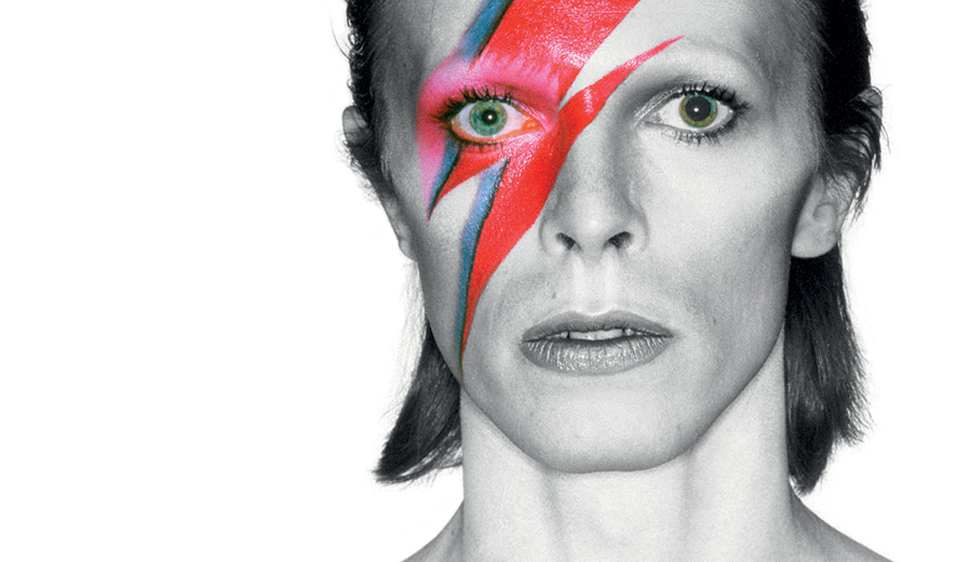

David Bowie is
EXHIBITION
MELBOURNE WINTER MASTERPIECES
David Bowie is
16 JUL - 1 NOV
Seen by over 1 million people worldwide at sell-out shows in London, Chicago, Sao Paolo, Paris, and Berlin, David Bowie is comes exclusively to ACMI from London’s Victoria and Albert Museum (V&A). Celebrate one of the most influential artists in music, film and video, fashion and performance in this groundbreaking exhibition at its only Australasian venue.
TICKETS NOW AVAILABLE FOR NEW WEEKEND SESSIONS AT 9AM.